India, officially the Republic of India, is a country in South Asia. It is known for its diverse culture, rich history, and significant influence globally.
Flag of India
Map of India
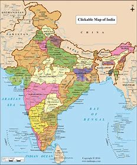
Important Places in India
India is home to many incredible landmarks:
Taj Mahal - Agra
Qutub Minar - Delhi
Gateway of India - Mumbai
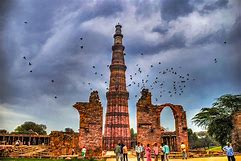
Population Graph
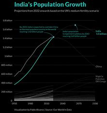
USA
The United States of America (USA) is a country primarily located in North America, known for its economic power and diverse geography.
Flag of the USA
Map of the USA
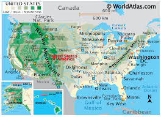
Important Places in the USA
Some of the most famous landmarks include:
Statue of Liberty - New York
Grand Canyon - Arizona
White House - Washington D.C.
Population Graph
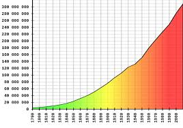
Brazil
Brazil is the largest country in South America, famous for its vibrant culture, the Amazon Rainforest, and carnival festivities.
Flag of Brazil
Map of Brazil
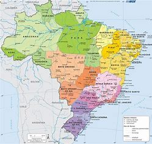
Important Places in Brazil
Brazil is home to many natural wonders and iconic landmarks:
Christ the Redeemer - Rio de Janeiro
Amazônia Rainforest
Iguazu Falls - Paraná
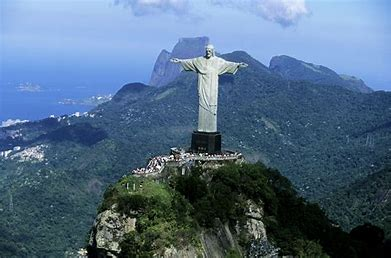
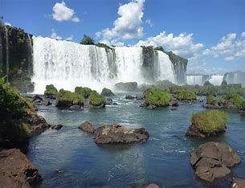
Population Graph
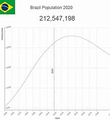
France
France is known for its art, fashion, and gastronomy, with iconic landmarks such as the Eiffel Tower and the Louvre Museum.
Flag of France
Map of France
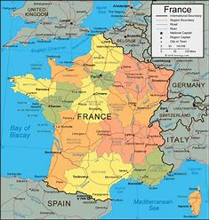
Important Places in France
France boasts many historical landmarks, such as:
Eiffel Tower - Paris
Louvre Museum - Paris
Mont Saint Michel - Normandy
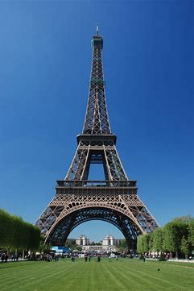
Population Graph
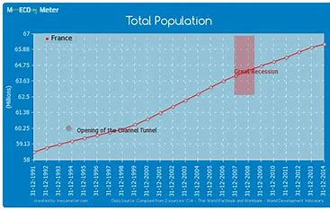
Japan
Japan is an island nation in East Asia, famous for its advanced technology, culture, and stunning landscapes.